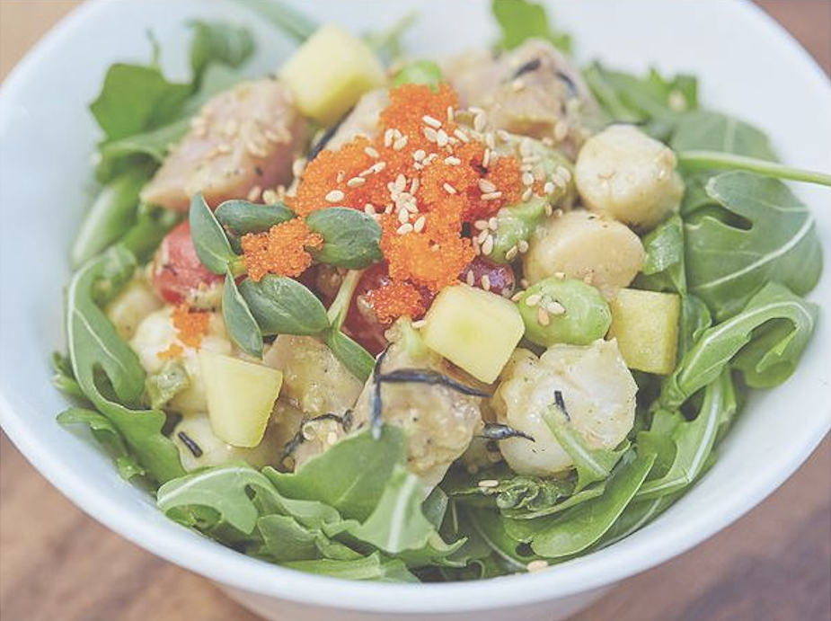
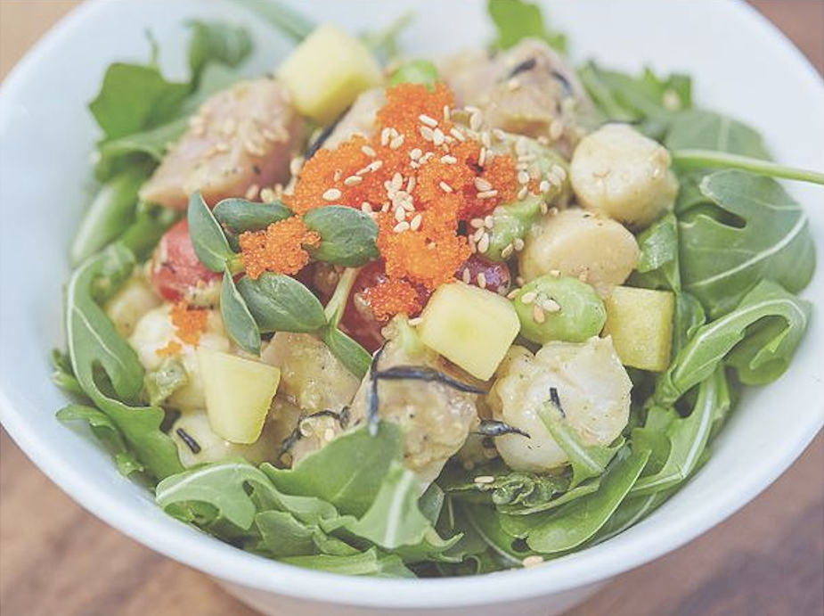

Kome Waza
(ko-meh-wa-za)
Respect the fish! Kome Waza strives to provide you with a
delicate balance between time-honored Japanese sushi traditions
and exciting new Asian- inspired flavors in a refreshing new take
on the East Coast poke trend.
 

SIGNATURE POKE
Seared tuna over 8-grain brown rice with mixed greens, hijiki quinoa, white soy avocado cream sauce, sesame seeds, garlic kizami nori,
tobiko, and salsa
2 SILKEN SHISO TOFU BOWL ?
Tuna and tofu over 8 - grain brown rice with mixed greens, hijiki quinoa, edamame, silken shiso tofu sauce, avocado, and kizami nori
3 SALTED MANGO HAMACHI BOWL
Hamachi and scallops over mixed greens with mango, hijiki quinoa, edamame, tomato, mango anchovy sauce, masago, sesame seeds,
and radish sprouts
Salmon over sushi rice with mixed greens, tomato, sweet onion, cucumber, edamame, pomegranate citrus spice sauce, ogo seaweed,
sesame seeds, radish sprouts, and tobiko
5 WASABI CASHEW TAKO BOWL?
Octopus, scallops, and shrimp over kale cold noodles with mixed greens, hijiki quinoa, tomato, wasabi cashew peanut sauce, ogo
seaweed, rice pop, and radish sprout